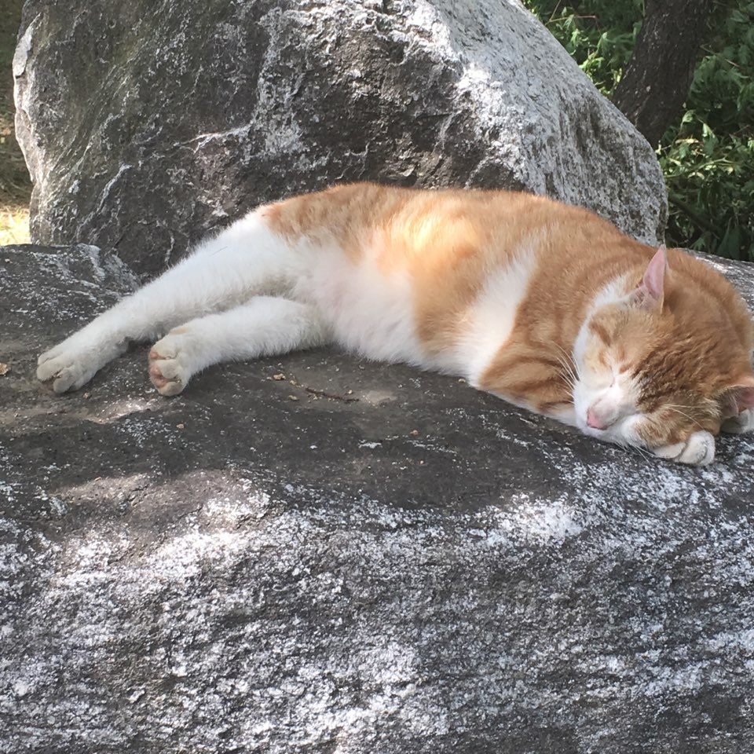
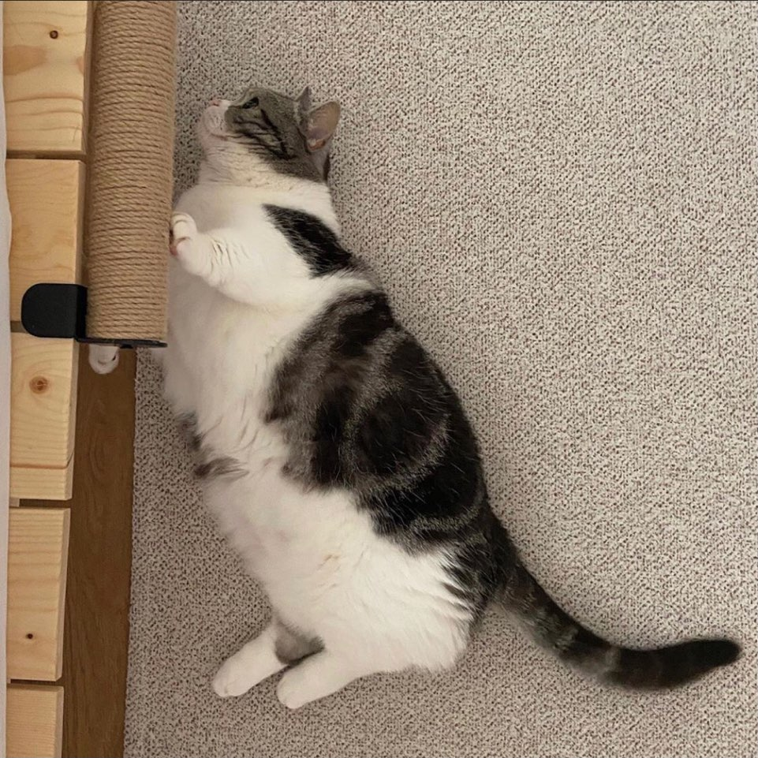
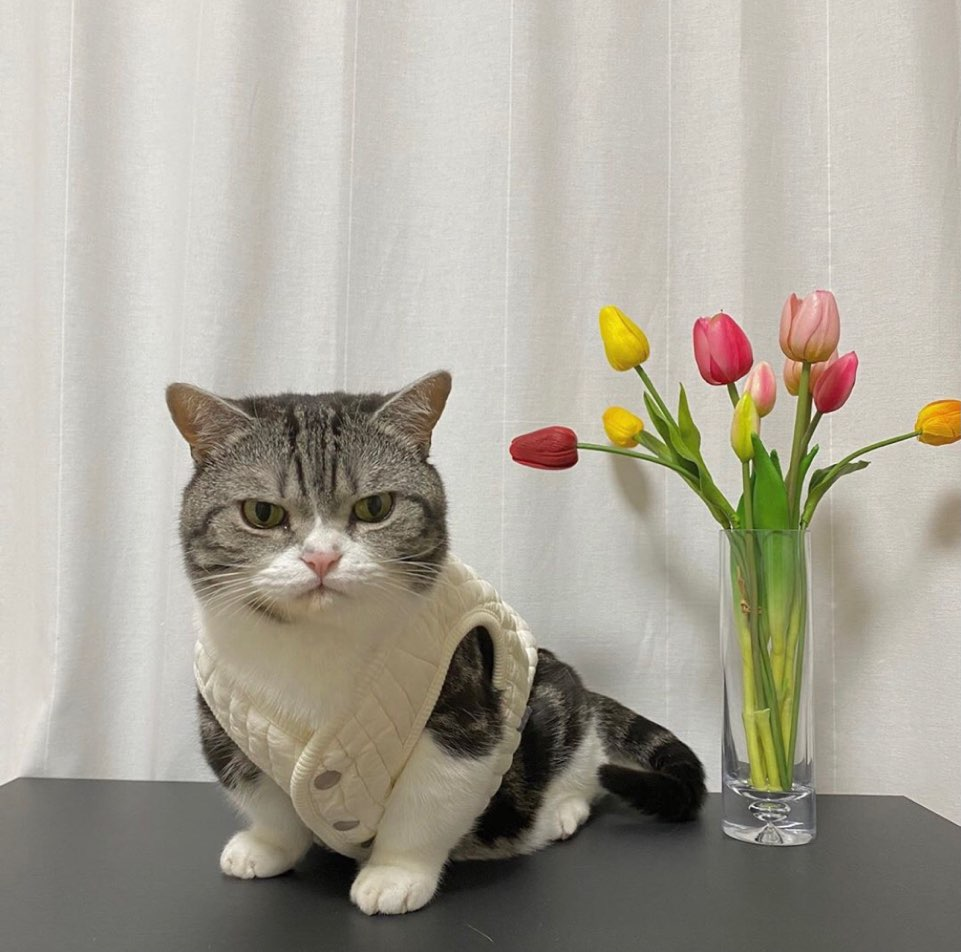
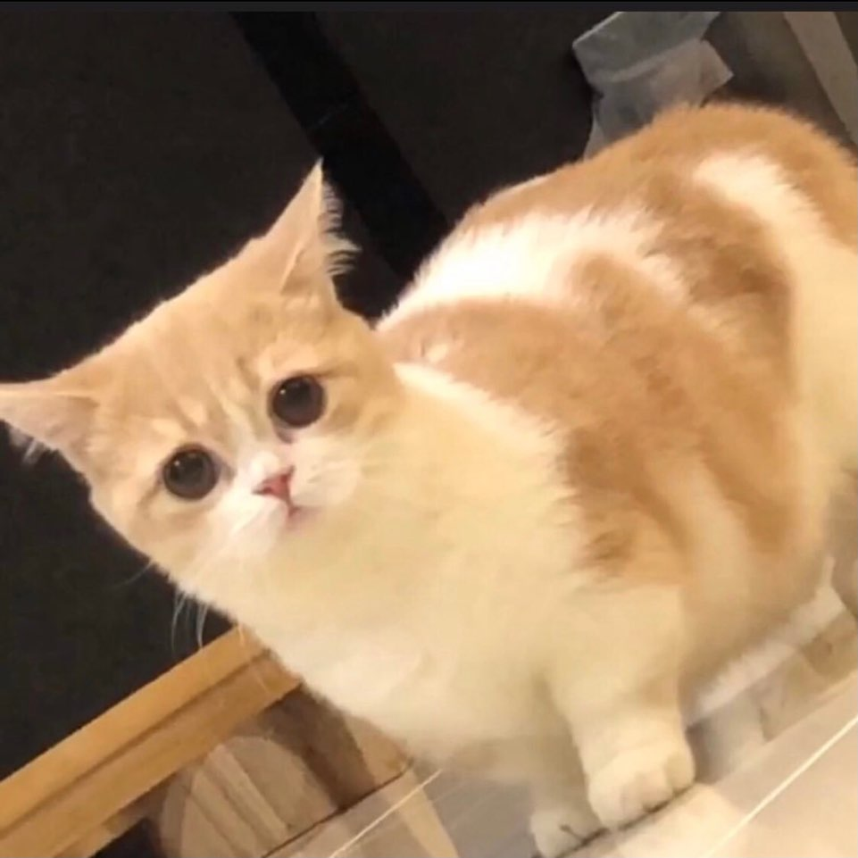
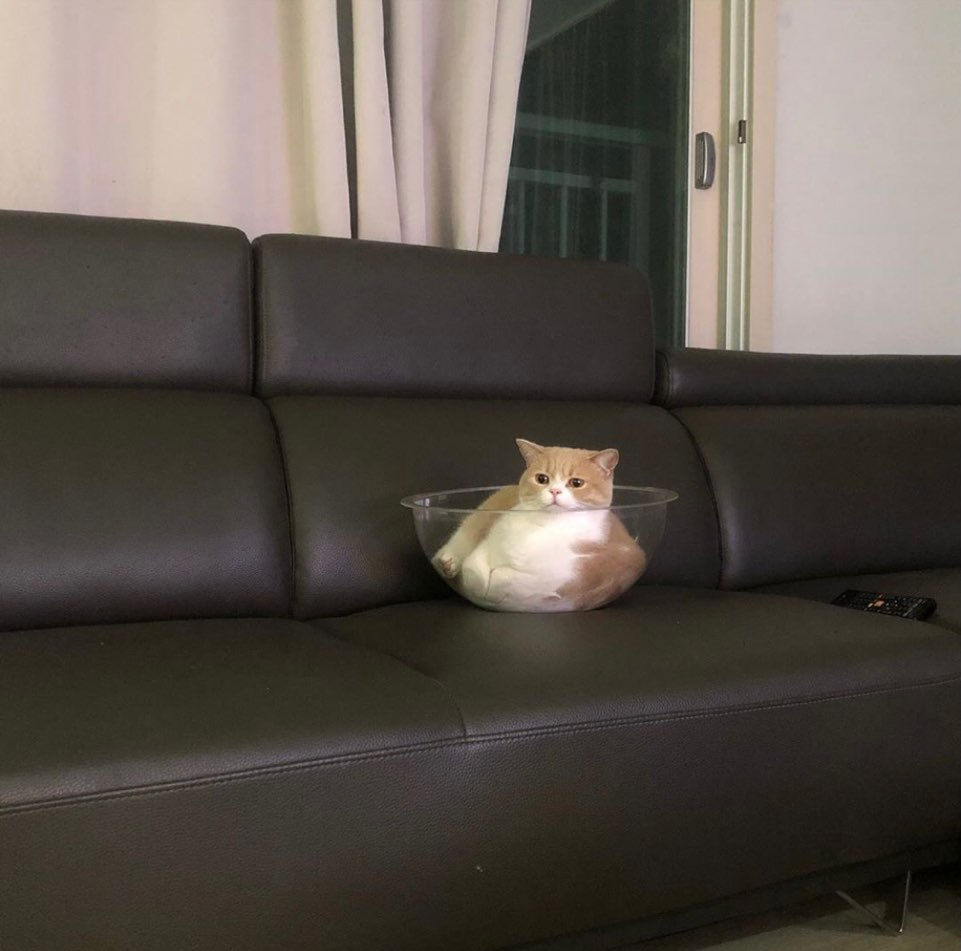

have cat allergy but I like 😺
WHY?
Cats are just so cute. A cat may look fierce, but it turns out he's. I can't raise a cat because my nose is stuffy when I'm with it because I'm allergic to cats. So I am going to be nice to the cat who lives in our apartment. Also, I get satisfaction from seeing cats through SNS.
There are so many cute cats in the world. Let me introduce my favorite cat.
김유동




✨ABOUT 유동✨
묘종 : 먼치킨
직업 : 유튜버
특징 :
항상 화난 얼굴을 하고 있어 무서울 거 같지만 다리가 짧고 통통해서 귀엽다. 애교는 없는 거 같으면서도 많이 부린다. 집에 누가 오면 격하게 반기는 스타일이다.
모찌




✨ABOUT 모찌✨
묘종 : 먼치킨
직업 : 고양이
특징 :
콧구멍이 크며 몸집이 작아보이지만 알고보면 비만인 귀여운 고양이다. 매우 얌전하고 주로 누워 있거나 엎드려서 잠을 많이 잔다.
주소 : 인스타그램